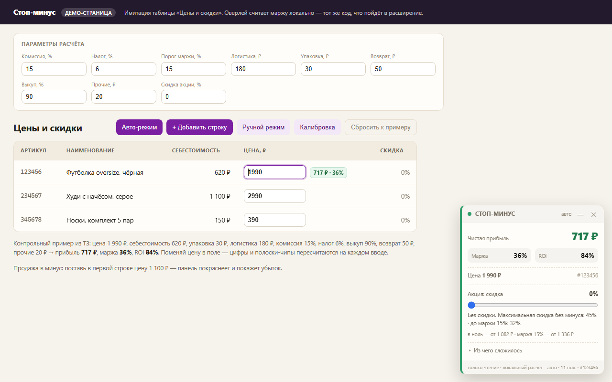
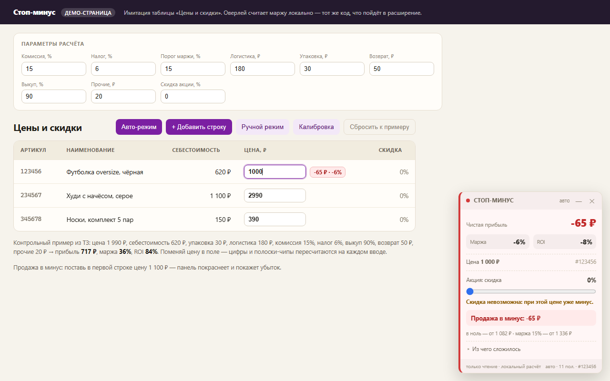
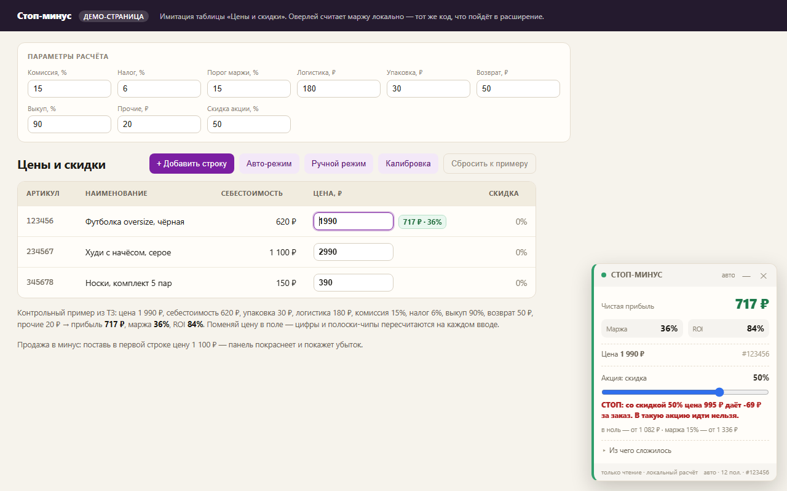

Не продавайте в минус
Показывает чистую прибыль и маржу прямо у поля цены в кабинете продавца Wildberries — до того, как цена сохранена. Комиссия, логистика, налог, выкуп и ваша себестоимость считаются на вашем компьютере.
Бесплатно · без регистрации · только чтение · без сетевых запросов



Как это работает
- Установите расширение и откройте кабинет продавца.
- Введите себестоимости один раз — списком или CSV из Excel.
- Откройте таблицу цен — панель появится рядом с полем цены.
- Меняйте цену — прибыль, маржа и ROI пересчитываются на каждом вводе.
Что внутри
Прибыль, маржа, ROI
Три числа, которые селлеры путают. Показаны одновременно, с расшифровкой «из чего сложилось».
Красная зона
Цена ниже себестоимости — панель краснеет и пишет прямым текстом: «Продажа в минус: −65 ₽».
Минимальная цена
«В ноль — от 1 082 ₽», «маржа 15% — от 1 336 ₽». Считается аналитически, без подбора.
Симуляция акции
Ползунок скидки: видно, что 25% ещё в плюсе, а 50% — уже СТОП. Максимальная скидка без минуса — 45%.
Себестоимости из Excel
Импорт CSV: «артикул; цена», табы, кавычки, запятая как десятичный разделитель.
Не ломается о вёрстку
Авто-поиск поля цены, калибровка одним кликом и ручной режим, если ничего не нашлось.
Честно об ограничениях
- Сейчас поддерживается только Wildberries. Ozon — после проверки спроса.
- Нет API-ключей, серверов, аккаунтов и автоматизации цен: расширение ничего не меняет в кабинете.
- Комиссии в справочнике — ориентиры; свою ставку можно указать вручную.
- Расчёты справочные и не заменяют бухгалтерию.
Проверьте на своей цене
Калькулятор считает маржу за 30 секунд, демо расширения показывает, как это выглядит в кабинете.